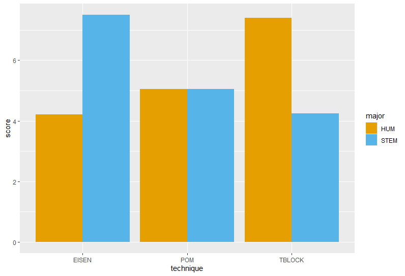
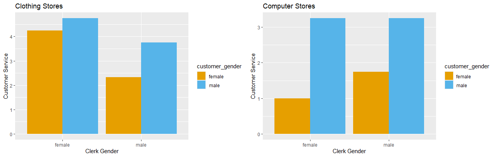

10 Factorial Designs
11 Chapter 9: Factorial Designs
11.1 Learning Objectives
- Know what a factorial is and what types of data it requires.
- Know the assumptions of a factorial ANOVA.
- Know how to interpret main effects and interactions in a factorial design.
- How to write up the results of a factorial ANOVA.
Now that we have the basics of an ANOVA down, we can build to a more complex design – the factorial ANOVA. In this technique, we are now adding another independent variable to see how two (or more) variables influence a particular outcome.
11.2 A Two Way ANOVA
As an example, let’s say that we want to examine several different time management techniques for college students: Pomodoro technique, Eisenhower matrix, and Time blocking. However, perhaps we also believe that which technique works might depend on whether the student is majoring in a STEM field versus a Humanities field. We get a sample of students in both STEM and Humanities, and assign them to the three different techniques. You can see the data for this in the Time management file.
This is a factorial design. We can also describe it as a “two-way” ANOVA, because we have two independent variables. We might also see it described as a 2x3 ANOVA (we have one variable, or “factor,” with two levels, and a second variable with three levels).
So, you may be asking why we don’t just do two separate ANOVAs for each variable? One reason is, again, family-wise error. But a more important issue is something known as an interaction. In research like this, we sometimes find that the influence of of one independent variable is affected by the other independent variable. I’ll share more about what interactions look like in a moment.
The good news is that, mathematically, a factorial ANOVA is very similar to the one-way ANOVA we’ve worked with so far. So, just as before, we need to understand how much total variance is in our model, and we do this by comparing each data point to the grand mean:
\(SS_{Total}=\sum^{N}_{i=1}(x_i-\bar{{x}}_{grand})^2\)
And just as before, we can also partial some of the variance into the sum of squares model, which describes how much variance is explained by group membership. But we have to remember that there are now two independent variables, so some of the variance in this model is explained by the technique the student uses, and some of it is explained by their major, so we now have two equations we need to use:
\(SS_{tech}=\sum^{k}_{g=1}n_{tech}(x_{tech}-\bar{{x}}_{grand})^2\)
So, for the sum of squares attributed to technique, we take the average for each group and compare it to the grand mean. Likewise:
\(SS_{maj}=\sum^{k}_{g=1}n_{maj}(x_{maj}-\bar{{x}}_{grand})^2\)
For the majors, we take the average of each of our two major groups and compare it to the grand mean. So far, this looks a lot like what we’ve done so far. But we have one additional piece of model variance we need to attend to:
\(SS_{cell}=\sum^{k}_{g=1}n_{cell}(x_{cell}-\bar{{x}}_{grand})^2\)
In this data, we have 6 different groups (STEM/Pomodoro; Humanities/Pomodoro; STEM/Eisenhower…) and each of these groups have their own mean. These means tell us a little something about differences that aren’t completely explained by someone’s group membership on both variables… there seems to be something extra here. That little extra something is the interaction. Mathematically, any variance from these cells that isn’t attributed to our independent variables is the interaction effect:
\(SS_{tech \times maj}= SS_{cell} - SS_{tech} - SS_{maj}\)
If you look at Figure 11.1, you’ll see that what technique works best depends upon whether a student is a STEM major or a Humanities major. That’s what interactions are all about – sometimes the combinations between our independent variables yield interesting results like this. So, the factorial ANOVA allows us to look at these interactions in a way two one-way ANOVAs don’t.

Finally, as you know, our data will contain some differences that we simply can’t explain, so we also have a residual sum of squares, calculated similarly to how we do it in a one-way ANOVA:
\(SS_{Resid.}=SS_{Total} - SS_{cells}\)
If you recall from Chapter 7, we then go through the task of calculating degrees of freedom and mean squares. However, with a one-way ANOVA, we had only one F ratio we were interested in. Now, we have three: the main effect of technique, the main effect of major, and the interaction between technique and major. These three effects can occur in any combination – maybe they are all significant, maybe we have main effects and no interaction, or maybe we have no main effects but we have an interaction.
In this particular data set, we have the following results:
| Variable | df | SS | MS | F-value | Sig. |
|---|---|---|---|---|---|
| Major | 1 | .08 | .075 | .039 | .84 |
| Technique | 2 | 18.98 | 9.49 | 4.98 | .008 |
| Major x Technique | 2 | 209.95 | 104.97 | 55.12 | <.001 |
| Residuals | 114 | 217.12 | 1.91 |
This means we have a main effect of technique, no main effect of major, and an interaction. In fact, Figure 11.1 demonstrates nicely what is going on – on average, different majors perform roughly the same. We also see some differences in how techniques work. But perhaps most importantly, we see the type of technique that’s most effective depends on what major a student is earning – if a student is getting a STEM degree, the Eisenhower matrix is most helpful for time management, while if a student is getting a Humanities degree, Time blocking is the most helpful.
As you might imagine, a factorial ANOVA is similar to a one-way ANOVA in that it only tells us if one group is significantly different from another group. For this result, we’d want to conduct a contrast or a post-hoc test on the techniques to see which groups are significantly higher than which. We didn’t see a main effect of major, but even if we had, there are only two groups, so we know where the difference is and there’s no need for a post-hoc test.
As for interactions, there isn’t exactly a way to easily test where the big differences are in an interactions. Instead, if you are curious about whether there are significant differences, you can conduct a simple effect analysis. This is where you take a “slice” of the data on one variable, and examine what’s going on. For example, we could ask “For STEM majors, what technique is the best?” Alternatively, you could take cell means and compare them with a t-test. For example, we could compare the STEM/Pomodoro group to the Humanities/Eisenhower group. Keep in mind that you should use a Bonferroni correction for each comparison, so this technique is best for answering specific questions about the data – to compare every group, we’d need 15 t-tests, which is quite a lot. So, using t-tests for examining interactions is most appropriate when you have specific comparisons you’d like to probe.
11.3 A Brief Note on N-Way ANOVAs
Two-way ANOVAs are not the limit for you! You can add more independent variables… but they get much harder to understand, and you need a large sample size (i.e., a lot of power) to find significant results.
Just to share one example of what this might look like, imagine that I am looking at customer reactions to store clerks. I set up a study where I have two genders of shoppers (men and women), two genders of store clerks (men and women), and two different types of stores the shoppers go to (a clothing store and a computer store).
Because we have three independent variables (customer gender, clerk gender, store type) this is a three-way ANOVA (and specifically, we could call it a \(2 \times 2 \times 2\) ANOVA (three variables, with two levels each).
This now means our results are also going to me more complex. We will ultimately have:
A main effect of customer gender
A main effect of clerk gender
A main effect of store type
A two-way interaction between customer and client genders
A two-way interaction between customer and store type
A two-way interaction between client gender and store type
A three-way interaction between client gender, customer gender, and store type
It gets complicated fast! So, you don’t see a lot of research that goes beyond a three-way ANOVA, but it certainly is possible to create more complex models. One difficulty with a three-way ANOVA like this is that it’s difficult to clearly convey the results. Really, we’d need a 3D graph to be able to put all three predictors into one graph, but those tend to be hard to understand. So instead, we’d probably need to break our charts into two 2D graphs.

Likewise, most people find two-way interactions a little complex to talk about; three-way interactions even are more difficult, so sometimes these analyses get complex enough that it can be hard to translate the practical implications to other people. Imagine trying to explain in words all the things going on in Figure 11.2. It’s not impossible, but it’s worth nothing here that adding even one additional independent variable makes the results much more complex to interpret in practical terms.
11.3.1 What to do if your assumption of normality and/or homoscedasticity are violated
Most programs don’t allow for easy correction of this problem, but if you have concerns about these issues, we can again apply a Welch test, just like we did for a one-way between-subject ANOVA. For the most part, though, ANOVAs are generally robust so most of the time, violations of these assumptions are not a major concern.
11.3.2 Calculating an Effect Size for Between-Subject T-Tests
I bet you know where I’m going this this… if you need an effect size, the best option is \(\hat{\omega}^2\) . You can calculate this for each main effect and any interactions. Here’s the equation once again:
\(\hat{\omega}^2=\frac{SS_M-(df_M)MS_R}{SS_T+MS_R}\)
11.4 Writing the Results of a Factorial ANOVA
Because you are conveying so much information when you do a factorial design, I strongly recommend you use a figure (or at the very least, a table) to help your audience understand the data. Just reporting a main effect or interaction as significant doesn’t help your audience understand how these effects look; a figure is the most efficient way of communicating this, as it provides a visual summary of all the group means very quickly. If you opt not to use a figure, you are going to need to report a lot of means and standard deviations!
When sharing the results of a between-subject ANOVA, you want to convey several pieces of information to your audience:
How many independent variables you are using in the model, and how many levels each factor has. This can be efficiently conveyed by using the notation I’ve used in this chapter (e.g., a \(2\times3\) ANOVA) but you can also describe the nature of your variables in more detail.
What the average scores are for each group and their accompanying standard deviations;
For all main effects and interactions, you must provide the F-test value, its degrees of freedom, and its significance;
Any simple effects, constrasts, or post-hoc tests you use to further explain significant findings in your omnibus test.
Here are some examples of how we might explain the results of the analyses we’ve discussed in the chapter:
According to a 2 x 3 ANOVA, there is a main effect of technique, F(2,114)=4.98, p=.001, such that the Pomodoro technique is significantly less helpful than Time blocking or Eisenhower matrix. There is no significant main effect of major, F(1,114)=.04, p=.84. There is a significant interaction, F(2,114)=55.12, p<.001. As demonstrated by Figure 11.1, Time block is more helpful for Humanities majors, whereas Eisenhower matrix is more helpful for STEM majors.
According to a 2 x 2 x 2 ANOVA, there was a significant main effect for store type, F(1, 22)=23.40, p<.001, with clothing stores having higher customer service. There was also a significant main effect for customer gender, F(1, 22)=18.91, p<.001, with male customers receiving better customer service. There was no main effect for clerk gender, F(2, 22)=3.54, p=.07. I also found a significant interaction between store type and clerk gender, F(1, 22)=8.43, p=.008. Female clerks tended to demonstrate better customer service in clothing stores than they did in computer stores, while male clerks demonstrated better customer service in computer scores than they did in clothing stores. There was no interaction between clerk and customer gender, F(1, 22)=.02, p=.89. There was also no significant three-way interaction, F(1, 22)=1.86, p=.18. Results are presented in Figure 11.2.